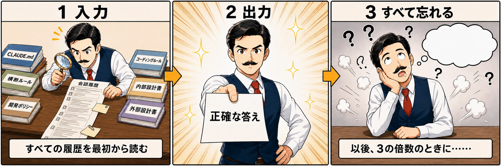
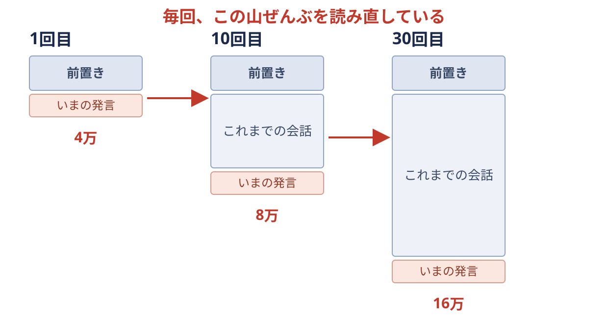
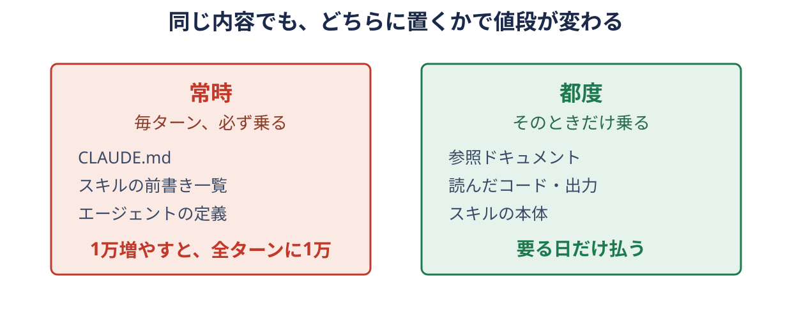
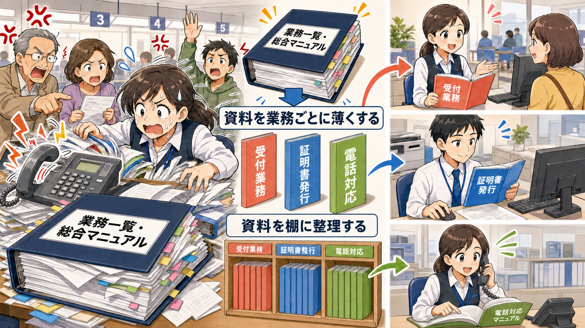

何を、どこに書いて渡すか
AI の4つの性質・ハーネス・質を決める3つ
仕組みと、コストを高くしない3つの習慣
どのファイルに何を書くか
うちの実物。何が、いつ読まれるか
この資料はすべて Claude Code を前提にします。ほかの道具でも考え方は同じですが、名前は違います。
ハーネスと、その中のコンテキスト
任せきりにすると期待どおりに動かないことがあります。理由は、次の4つの性質です。
これらは使い方の巧拙ではなく、性質です。注意で防ぐのではなく、仕組みで抑えます。
前の4つの性質を仕組みで抑えるための道具一式を、まとめてハーネス（馬具）と呼びます。
前回はここで終わりました。
今日の「コンテキスト」は、この3つのどれか1つではなく、2番と3番にまたがる別の目線。
料金は、読ませた量で決まります。
毎回のやり取りで、この4つをまとめて渡し直している。


| 常時分 | 会話履歴 | 1回あたりの入力 | |
|---|---|---|---|
| 1ターン目 | 3万7千 | 4千 | 4万1千 |
| 10ターン目 | 3万7千 | 4万2千 | 7万9千 |
| 30ターン目 | 3万7千 | 12万 | 15万7千 |
補足——コンテキストに関するコマンド（Claude Code の場合）
/context いま何にどれだけ使っているかを色分けの図で見せる。まずこれで、太っている場所を確かめる/clear 会話を空にして始め直す。いちばん軽くなる。CLAUDE.md などの決めは残る（前の会話は /resume で戻せる）/compact 会話を要約して詰める。同じ会話を続けたいときはこちら。/compact <残したいこと> と書き足せる/rewind コードと会話を、前の地点まで巻き戻す。行き止まりに入ったとき、そこまで戻ってやり直せる| モデル | 入力 | 出力 | キャッシュ読み | 書き 5分 | 書き 1時間 | 備考 |
|---|---|---|---|---|---|---|
| Claude Haiku 4.5 | $1 | $5 | $0.10 | $1.25 | $2 | いちばん軽い。定型の作業向き |
| Claude Sonnet 5.5 | $2 | $10 | $0.20 | $2.50 | $4 | 普段づかいの中心。Sonnet 5 と同額 |
| Claude Sonnet 5 | $2 | $10 | $0.20 | $2.50 | $4 | |
| Claude Opus 5.5 | $4 | $20 | $0.20 | $5 | $8 | Opus 5 より安い。読みは入力の20分の1 |
| Claude Opus 5（既定） | $5 | $25 | $0.50 | $6.25 | $10 | |
| Claude Opus 4.8（旧） | $5 | $25 | $0.50 | $6.25 | $10 | Opus 5 と同額 |
| Claude Fable 5.1 | $10 | $50 | $0.25 | $12.50 | $20 | 最上位。読みは入力の40分の1 |
| Claude Fable 5 | $10 | $50 | $1 | $12.50 | $20 | |
| GPT-6 luna | $0.10 | $0.50 | $0.01 | $0.125 | いちばん安い | |
| GPT-5.6 luna | $0.20 | $1.20 | $0.02 | $0.25 | ||
| GPT-5.6 terra | $2 | $12 | $0.20 | $2.50 | ||
| GPT-6.1 sol | $2 | $10 | $0.10 | $2.50 | 9月29日に出た。読みは入力の20分の1 | |
| GPT-6 sol | $2 | $10 | $0.20 | $2.50 | ||
| GPT-5.6 sol | $4 | $20 | $0.40 | $5 | ||
| GPT-5.5（旧） | $5 | $30 | $0.50 | 割増なし（入力と同額） | ||
| GPT-6 astra | $10 | $50 | $1 | $12.50 | GPT の最上位 | |
用が済んだら新しい会話へ。いちばん効く。しかもタダで、今日からできる。
長い会話は、値段だけでなく精度も薄まる
CLAUDE.md・スキルの前書き一覧・繋いだ道具の定義。
ここは会話の中身に関係なく、毎ターン課金される
モデルとエフォートを途中で替えるとキャッシュが外れて、前置きの料金が10分の1から元に戻る。
毎回変わるもの（今日の日付など）を前置きの先頭に置かないのも同じ理由
キャッシュとは 同じ前置きを続けて送ると、向こうが前回の計算結果を使い回す仕組み。
使い回せた部分は入力の10分の1（Opus 5.5 は20分の1・Fable 5.1 は40分の1）。
同じ内容でも、どこに置くかで、かかる料金が変わります。
毎ターン乗る
CLAUDE.md ／ スキルの前書き一覧 ／ エージェントの定義
そのときだけ乗る
今回の依頼と会話 ／ 参照ドキュメント ／ 読んだコードや出力
要るときだけ
メモリ ／ 機構が自動で差し込む確認結果
置き場所は、どこまで効かせたいかで決まる。
全プロジェクトで守る決めはホーム側、このリポジトリだけの前提はリポジトリ側。

一部では「憲法ファイル」と呼ばれる。広まった言い方ではないが、それくらい全体を縛る1枚。
前提と用語
禁止事項と必ず守る規約
ディレクトリの地図
詳しい文書への入口
一度しか使わない手順 → スキル
長い仕様や API の一覧 → 参照ドキュメント
議事録や経緯 → 決定事項だけを一行に
落とし穴——@ で取り込むと全文が貼られます。パスだけ書いて「必要になったら読んで」に。
書いたから守られる、ではない。あれもこれも書くと、本当に守らせたいものが埋もれる。
AI の注意力は有限。コンテキストが大きくても、すべてが守られるわけではない。
常に読まれる。数が増えるほど毎ターン効いてくる。
使わないスキルを置きっぱなしにしない
起動したときだけ読まれる。ただし以後もずっと乗り続ける。
目安は500行以内
説明文は「何ができるか」ではなく起動条件を書く場所。実際の言われ方をそのまま入れる。
スキルについては非常に重要な概念ですので、機会があれば別の回で詳しく述べたいと思います。
docs/ のまま。docs/rules/development-policy-common.md」
読むかどうかは、その作業のときに決まる。
その規則が要るときだけ読まれ、費用もそのぶん。
関係ない作業のときは、いっさいかからない。
これはコンテキストの話だけではない。
スキルやサブエージェントなどにも通じる考え方。

うちの環境の実物。どのコンテキストが、いつ読まれるか。
~/.claude/
環境全体の決め。どのプロジェクトで作業していても効く。
ここに置くと全プロジェクトに効く
~/REPOS/_template/
横断ルールの正本はここ1つだけ。
CLAUDE.md・AGENTS.md・docs/rules/ の原本
~/REPOS/<名前>/
原本のコピーが配られる。だからどのリポジトリでも中身は同じ。
加えて、その物だけの設計文書を持つ
配布は機械（fleet）がやる。版を刻んで、全リポジトリのコピーを原本にそろえる。
人が直すのは原本だけ。
コピーを直すと、次の配布で上書きされるか、配布されずに食い違ったまま残る——どちらも事故。
| ファイル | 何が書いてあるか | いつ読まれるか |
|---|---|---|
~/.claude/CLAUDE.md | 全プロジェクトで守る決め。開発の方法論、応答のしかた、質問と決定の規則、破壊と書き込みの鉄則 | 常時 （全プロジェクト） |
CLAUDE.md（プロジェクト） | このリポジトリの前提。WHY／WHAT／開発フローの10段／運用ルール／開発コマンド | 常時 （このリポジトリ） |
AGENTS.md | 別の AI（Codex）にレビューさせるための指示書。正本の在りか、レビューアの役 | Codex だけが読む |
Claude は AGENTS.md を開かない。Codex は CLAUDE.md を読まない。
1枚に混ぜると、両方に効かない文書になる。
前提——ホーム側は環境全体の決め。リポジトリ側の CLAUDE.md と AGENTS.md はテンプレートに原本が1つあり、
そこからコピーされて全リポジトリへ同じものが配られる。
| ファイル | 何の決めか |
|---|---|
development-policy-base.md | 開発方針（基盤） |
development-policy-common.md | 開発方針（共通ルーチン） |
development-policy-script.md | 開発方針（スクリプト） |
development-policy-part.md | 開発方針（部品） |
interface.md | 契約の書き方。design-concept に「インターフェース」の節を必ず持つ |
perl-coding.md | Perl の実装規約 |
red-flags.md | 失敗の受付箱。失敗が起きたら、まず draft を疑う |
terms.md | 用語の正本。同じ語を他所で再定義しない |
~/REPOS/_template/docs/rules/）に1枚だけ。機械が版を刻んで全リポジトリへ配るので、どのリポジトリでも中身は同じ。terms.md を開かない。用語はレビューの対象ではなく、読めば必ず何か指摘が出る——読まないことが担保になる| ファイル | 何か | いつ読まれるか |
|---|---|---|
docs/draft.md | 仕様の正本。全仕様の番号付き列挙・恒久 | 実装が読むのはこれ |
docs/design-concept.md | 外部設計書（人間用）。背景・外部IF・出力契約。課題の台帳もここ | 設計と課題を見るとき |
docs/spec.md | 内部設計書。モジュール分割・関数契約 | 常時読み込みはしない （2026-08-16 にやめた） |
docs/test.md ／ README.md | テストの設計／リポジトリの入口 | 要るときに開く |
2026-08-16、コンセプトの整理に伴い spec.md を常時読み込みから外した。役目が draft.md へ移り、常に読ませる必要がなくなった。
書き込みの入口も絞ってある——どこからでも書けると、中身が食い違って正本にならない。
design-concept には課題（To Do）も、なぜこう決めたかの経緯も積まれる。
設計書なのに、太り続ける。
課題を専用の台帳へ移す。
設計書と課題は別物——設計書は何を作るか、課題は何をやるか。
設計が固まったら、実装は draft だけを見る。
design-concept は開かない。
設計を変えるときだけ design-concept を開く。そのとき経緯も残る——
それ以外のときは、常時のコンテキストに乗せない。
課題の台帳化は、そこへ至る一手。
| ページ | 覚えておくこと | 対象者 |
|---|---|---|
| 4 | AI は、正しい答えを出すとは限らない。 嘘をつく・抜ける・調べない・勝手にやる。さらに、同じことを聞いても答えが変わる（確率モデル） | 全員 |
| 8 | AI は前の発言を覚えていない。毎回、全部を渡している。だからコンテキストが要になる | 全員 |
| 11 | コストを高くしない3つの習慣。セッションを変える／読ませるものを減らす／途中で変えない | 全員 |
| 15 | CLAUDE.md がいちばん太りやすい。AI の注意力は有限。だからコンテキストを絞る | 設計する人 |
| 17 | すべてのコンテキストを常時載せない。分ける → 棚に置く → 必要なとき、必要な分だけ | 設計する人 |
| 19〜22 | AI 開発環境での管理。AI 開発環境でのコンテキスト構成を理解する | 設計する人 管理する人 |